Back
Elementary OS
Perkenalkan Elementary OS Hera Sistem Operasi yang memberikan tampilan seperti Mac OS dengan sistem operasi Linux sebagai bawaan nya. Elementary OS merupakan sistem operasi yang ramah pengguna yang bisa dipakai oleh siapapun. Kali ini saya akan memberikan cara untuk menginstall Elementary OS dengan menggunakan Virtual Box. Untuk mendownload Elementary OS bisa melalui link ini Elementary OS
Install Elementary OS
1. Membuat Virtual Machine
Install Virtual Box yang sudah di download, lalu klik install dan tunggu sampai proses
installasi selesai. Setelah proses installasi selesai, maka buat Virtual Machine baru
dengan cara
memilih tombol yang di sudut kiri atas yang bertuliskan New. Lalu tuliskan nama sistem
operasi nya serta tipe dan versi nya.
Kalian bisa mengikuti gambar di bawah ini.
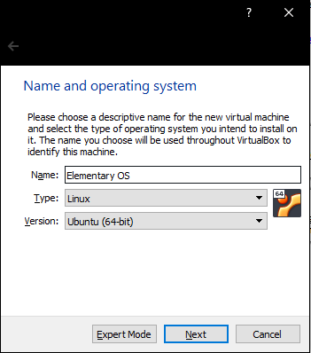
2. Tahap Pemilihan Memory dan Hardisk
Pada tahap ini, kalian bisa memilih alokasi memory pada Virtual Machine untuk sistem
operasi
Elementary OS kalian bisa mengikuti sesuai rekomendasi Virtual Box atau kalian
bisa
mengalokasikan nya sesuai keinginan kalian. Begitu juga dengan alokasian hardisk, kalian bisa
mengikuti
Virtual Box atau kalian bisa mengalokasikan nya sendiri. Saya memilih untuk mengikuti
saran dari
Virtual Box. Setelah itu pilih create untuk melanjutkan proses nya.
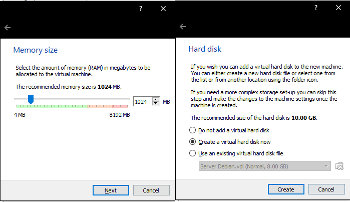
3. Pemilihan Penyimpanan Hardisk
Pada tahap ini kalian akan memilih tipe dari hardisk yang akan di install Elementary OS, ada 3 pilihan untuk tipe hardisk nya.
- VDI (Virtual Disk Image)
- VHD (Virtual Hard Disk)
- VMDK (Virtual Machine Disk)

4. Pemilihan ISO Elementary OS
Setelah Virtual Machine sudah dibuat, maka tahap selanjutnya pemilihan ISO dari sistem
operasi yang akan di install. Klik nama Virtual Machine nya yaitu Elementary OS lalu
pilih settings
yang berada di atas. Lalu akan muncul beberapa menu, pilih bagian menu Storage, lalu klik icon
CD yang bertuliskan Empty
Lalu klik icon CD yang berada di tulisan Optical Drive dan pilih Choose Virtual Optical Disk
File
Pilih ISO dari Elementary OS yang sudah di unduh, lalu klik OK.
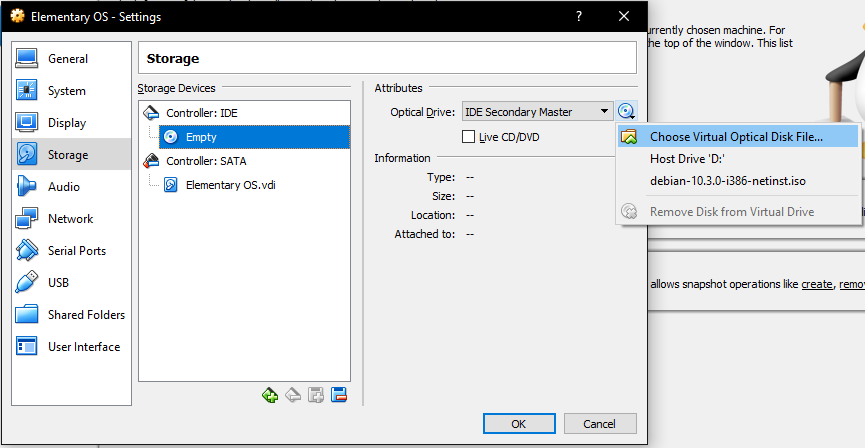
5 Start Virtual Machine
Setelah pemilihan ISO Elementary OS lalu Start virtual machine, di bagian menu atas.
Lalu akan muncul menu seperti berikut ini. Lalu pilih Try or install Elementary OS dengan
cara menekan Enter di keyboard.
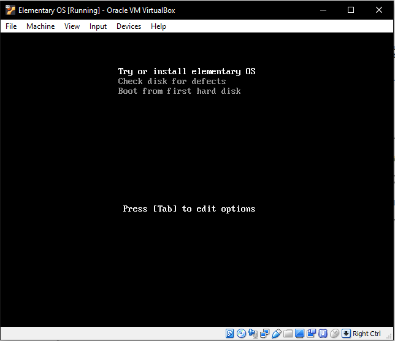
5.1 Install Elementary OS
Selanjutnya pilih menu Install Elementary, lalu kalian akan masuk ke menu keyboard layout, pilih
yang di rekomendasikan
oleh Elementary OS yaitu English (US) dan selanjutnya pilih Continue.
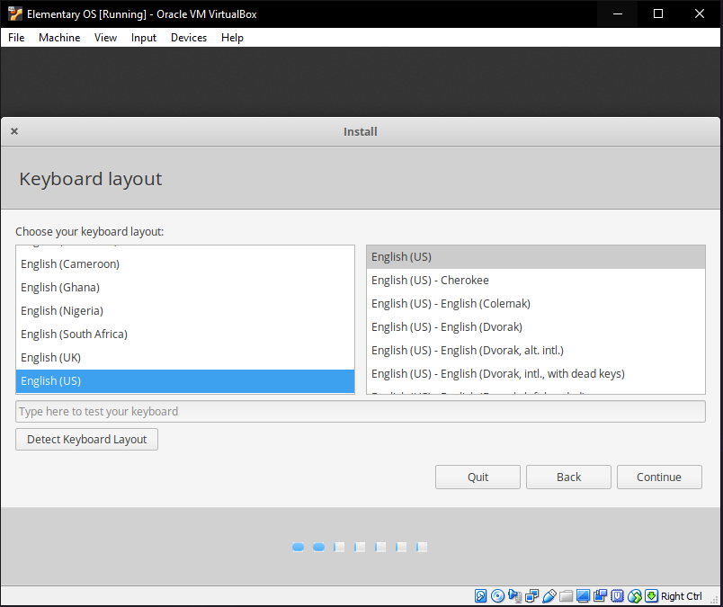
Selanjutnya kalian akan masuk ke menu, Updates and other software dan akan muncul pilihan
Install third party softwares for graphics and WI-FI hardware and additional media
formats
Pilih pilhan tersebut lalu klik continue untuk masuk ke tahap selanjutnya.
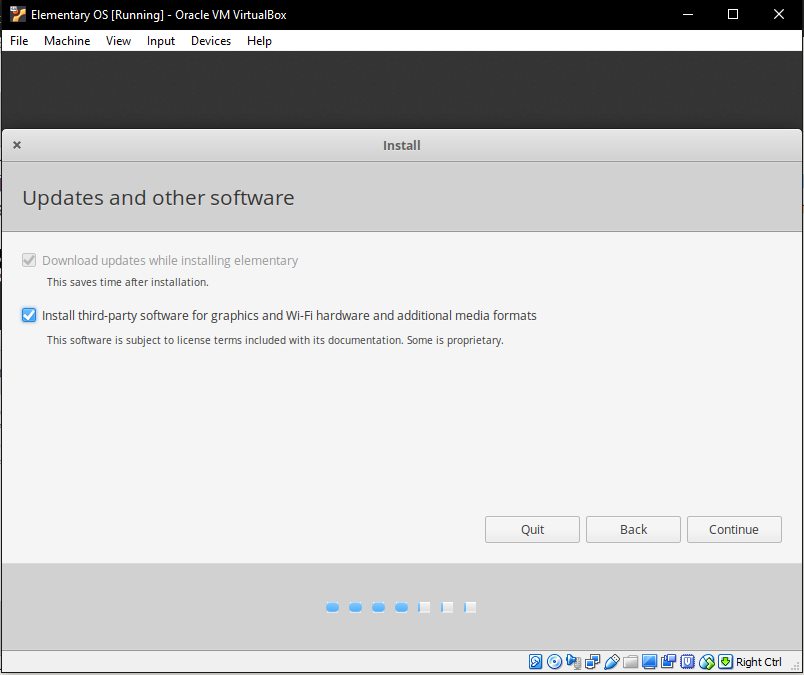
Pada tahap selanjutnya kita akan masuk ke tahap format hardisk dari Virtual Machine yang
kita gunakan
untuk menginstall Elementary OS. Pilih Erase disk and install Elementary untuk
menginstall
sitem operasi nya, tetapi jika kalian ingin mengatur penyimpanan untuk installasi nya maka pilih
menu Something Else. Pada simulasi ini, saya akan memilih pilihan pertama saja. Setelah
itu
klik Install Now untuk melanjutkan proses Installasi nya. Jika muncul pop-up Write the
changes to disk?
pilih saja continue.
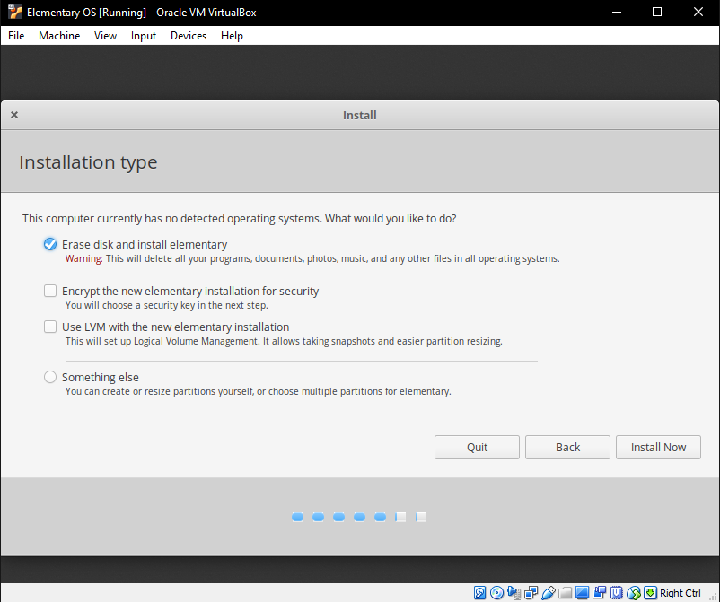
Pada tahap selanjutnya kita akan memilih Zona Waktu untuk mengatur jam dari sistem operasi nya,
ketikkan pada kotak box dibawah nama lokasi kalian.
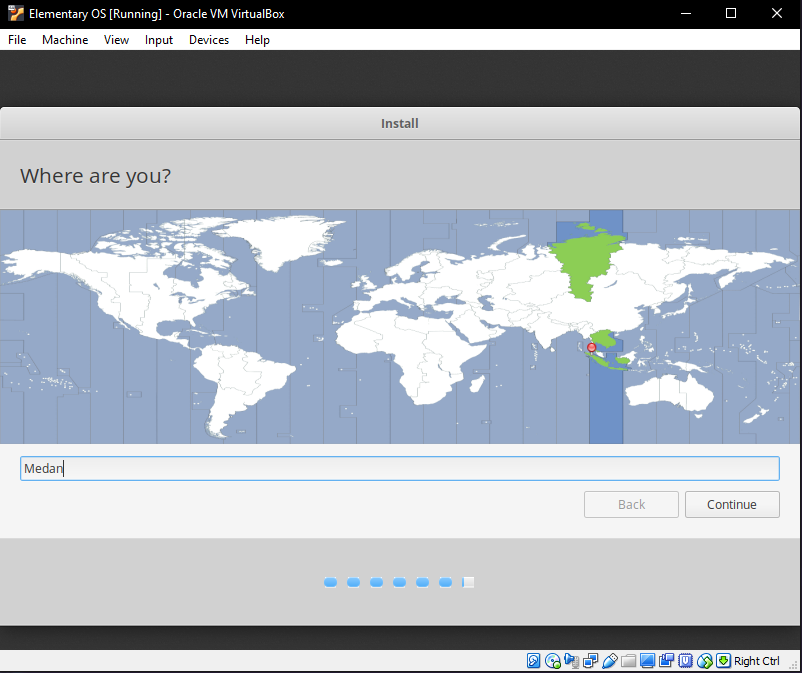
Pada tahap selanjutnya, kalian harus mengisi username dan nama komputer kalian, isi sesuai data
kalian masing masing. Lalu klik continue untuk melanjutkan proses installasi.
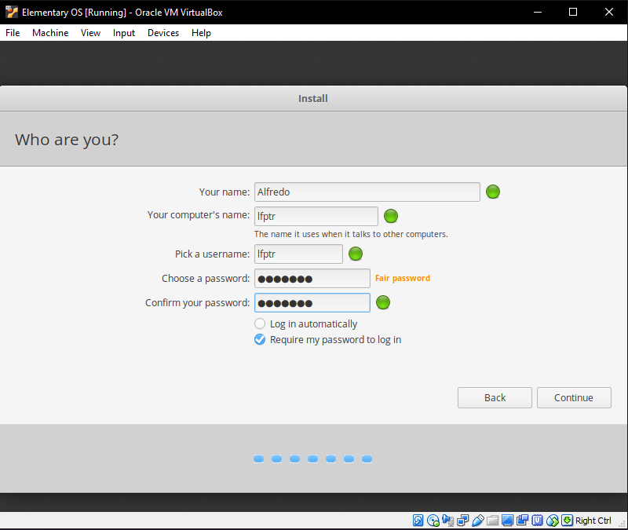
Jika semua tahap di atas sudah di ikuti dengan benar, maka kalian sekarang masuk ke proses
menunggu installasi
sistem operasi. Tunggu sampai selesai di install sistem operasi nya.
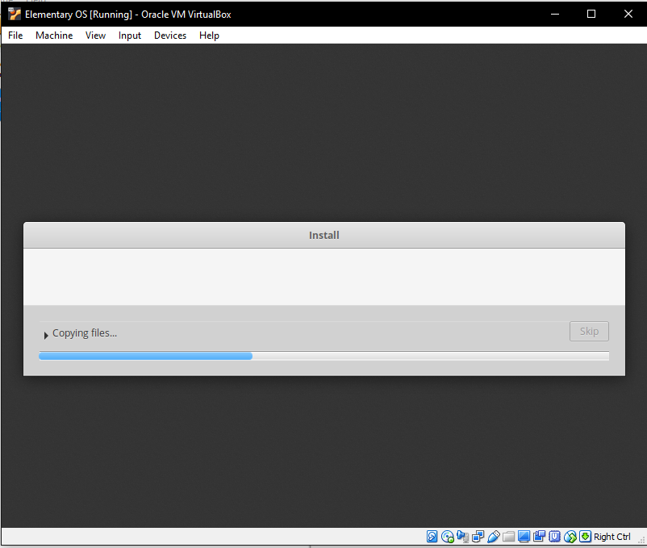
Jika proses installasi sudah selesai, maka kalian sudah siap untuk mencoba Elementary OS,
tampilan nya sangat menarik
dan ramah pengguna. Berikut ini adalah tampilan dari Elementary OS
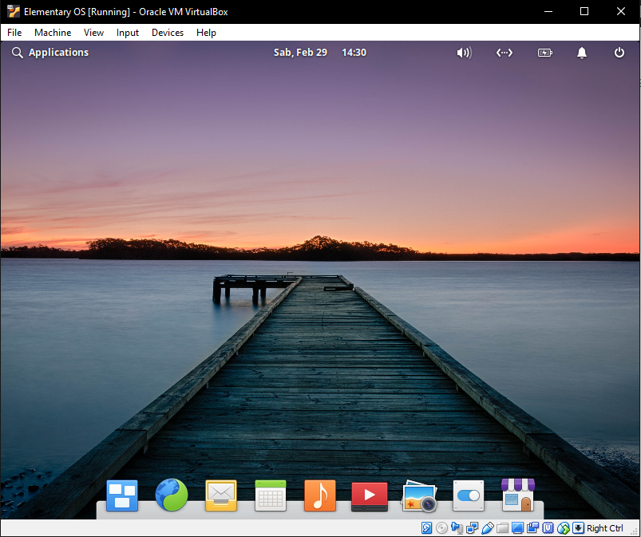
Sampai disini cara menginstall sistem operasi Elementary OS, sampai jumpa di tutorial
berikut nya.
Sabtu 29 Februari, 2020